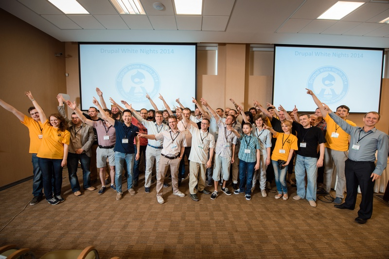
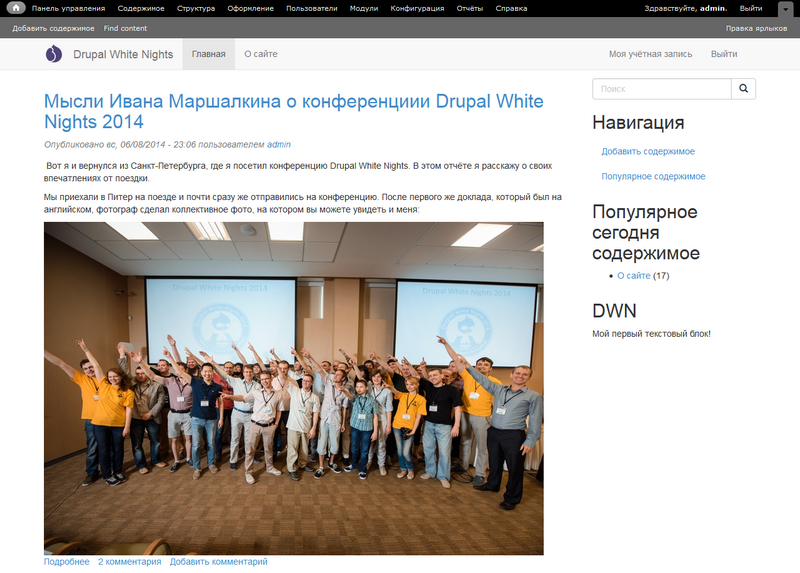
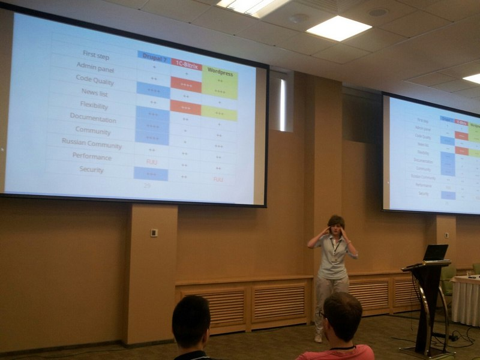
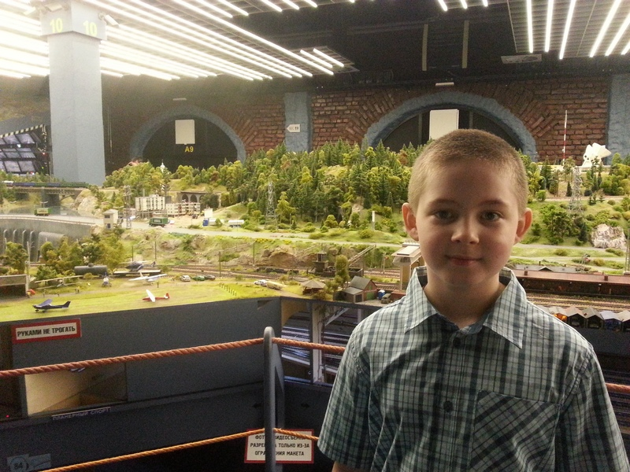

Мысли о конференциии Drupal White Nights 2014
Вот я и вернулся из Санкт-Петербурга, где я посетил конференцию Drupal White Nights. В этом отчёте я расскажу о своих впечатлениях от поездки.
Мы приехали в Питер на поезде и почти сразу же отправились на конференцию. После первого же доклада, который был на английском, фотограф сделал коллективное фото, на котором вы можете увидеть и меня:
После небольшого перерыва на кофе мы с сестрой отправились на тренинг для новичков. Честно сказать, я думал, там будет сложно, но на самом деле было очень просто. Тренеры подробно всё объясняли и показывали на проекторе. Я установил веб-сервер XAMPP, Drupal, несколько модулей и тему. Вот что получилось:
После тренинга я отправился на доклад моей сестры Кати Маршалкиной. Я не всё понял, но было очень интересно.
Голова полна мыслей.
После перерыва на обед мы послушали ещё несколько докладов, а я с нетерпением ждал розыгрыша лотереи и боулинга. Я лично принимал участие в розыгрыше лотереи, вытаскивая наугад анкеты победителей. Разыгрывалось множество призов: разные книги о программировании, футболки с логотипом Drupal, лицензии на программы, наклейки и флэшка. Мне достались наклейки, а Кате футболка. Все были очень довольные и отправились на вечеринку в боулинг-клуб. Я к своему удивлению выбил 3 страйка. Наша команда заняла 2-ое место и каждый игрок получил средство для ухода за компьютером.
Поздним вечером, когда мы возвращались в гостиницу, я увидел белые ночи во всей красе – в 11 вечера было светло как днём.
На самом деле я думал, что эта конференция будет скучной, а на тренинге для новичков будут одни профессионалы. Но конференция была очень интересной, и даже присутствовал юмор. Организаторы и докладчики оказались очень общительные. Эта конференция помогла мне больше узнать о Drupal и его сообществе.
На следующий день мы отправились гулять по Санкт-Петербургу. Больше всего мне понравилась прогулка на теплоходе и Гранд-Макет. Город мне очень понравился. Я обязательно приеду ещё!
